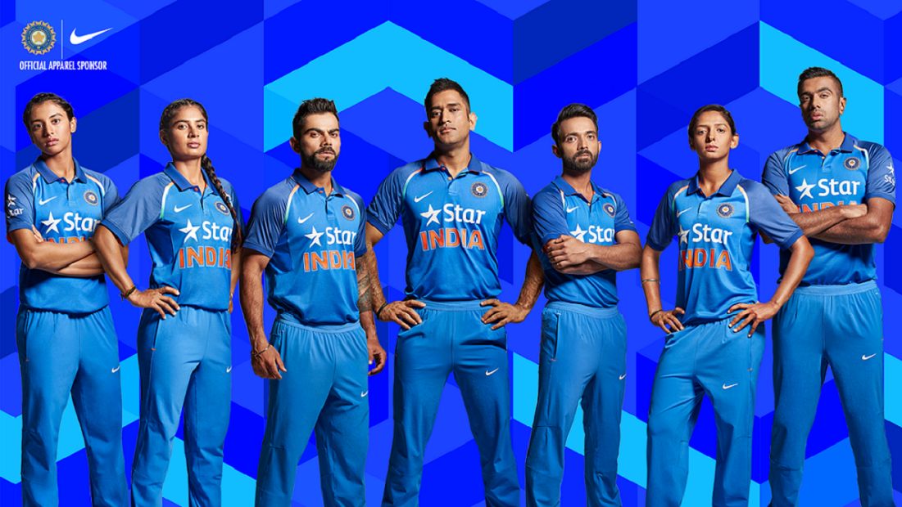

<section class="blog-detail mtb-40">
    <div class="container">
        <div class="row">
            <div class="col-md-8">
                <div class="blog-left">
                    <h1>INDIAN CRICKET TEAM</h1>
                    <div class="posted-on">
                        <p align="center"><b>"TEAM INDIA"</b>&nbsp;&nbsp;&nbsp;&nbsp;
                            <span> <b>MEN IN BLUE</b></span> HERE&nbsp;&nbsp;&nbsp;&nbsp;
                            <span><b>"WINNING IS A HABIT...."</b></span></p>&emsp;&emsp;&nbsp;&nbsp;
                    </div>
                    <div class="detail-img">
                        
                    </div>
                    <div class="blog-desc">
                        <h1>Cricket is the most popular sport in India by far,and is played almost everywhere. The Indian national cricket team won the 1983 Cricket World Cup,the 2007 ICC World Twenty20, the 2011 Cricket World Cup, the 2013 ICC Champions
                            Trophy, and shared the 2002 ICC Champions Trophy with Sri Lanka.</h1>
                        <p>
                            Cricket was introduced to India by European merchant sailors in the 18th century, and the first cricket club was established in 1792. India's national cricket team did not play its first Test match until 25 June 1932 at Lord's, becoming the sixth team
                            to be granted test cricket status. From 1932 India had to wait until 1952, almost 20 years for its first Test victory. In its first fifty years of international cricket, India was one of the weaker teams, winning only 35 of
                            the first 196 Test matches it played. The team, however, gained strength in the 1970s with the emergence of players such as batsmen Gavaskar, Viswanath, Kapil Dev, and the Indian spin quartet.
                        </p>
                        <p>Traditionally much stronger at home than abroad, the Indian team has improved its overseas form, especially in limited-overs cricket, since the start of the 21st century, winning Test matches in Australia, England and South Africa.
                            It has won the Cricket World Cup twice – in 1983 under the captaincy of Kapil Dev and in 2011 under the captaincy of Mahendra Singh Dhoni. After winning the 2011 World Cup, India became only the third team after West Indies
                            and Australia to have won the World Cup more than once, and the first cricket team to win the World Cup at home.</p>
                    </div>
                </div>
            </div>
        </div>
    </div>
</section>